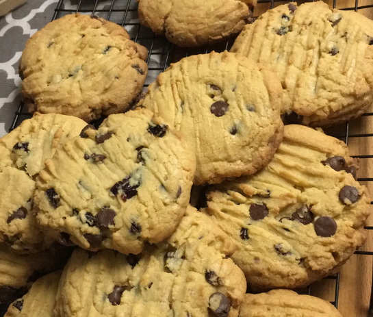

Chocolate Chip Cookie Recipe

Description
Have you been craving the chocolatiest, moistest, and softest cookies known to human civilization?
Well, then you're at the right place. Whether you're a health nut or a connoiseur
of desserts on a mission to find the ultimate cookie, you will not be disappointed.
Utilizing the latest research provided by the leading scientists at Yang Labs (led by master chef Yi),
we have developed the optimal recipe to create thee most balanced cookie in the world.
If you are ready for this recipe then please continue reading. If you aren't, well,
even more of a reason for you to try this recipe so you too can appreciate having your
tastebuds BLOWN with flavour and satisfaction! You don't want to miss this! Buckle up,
we're going on a trip but not on a rocket ship, rather, to your nearest kitchen.
Ingredients
- 2 ¼ cups all-purpose flour
- 1 teaspoon baking soda
- 1 teaspoon salt
- 1 (3.3 ounce) package instant white chocolate pudding mix
- 1 cup butter, softened
- 1 cup white sugar
- ¾ cup brown sugar
- 2 eggs
- 2 teaspoons vanilla extract
- 2 cups semisweet chocolate chips
Directions
- Preheat the oven to 375 degrees F (190 degrees C). Stir together the flour, baking soda, salt and instant pudding powder; set aside.
- In a medium bowl, cream together the butter, white sugar and brown sugar until smooth. Blend in the eggs and vanilla. Gradually mix in the dry ingredients until just blended. Stir in the chocolate chips by hand using a wooden spoon. Scoop cookies using an ice cream scoop or by heaping tablespoons. Place cookies at least 2 inches apart onto ungreased cookie sheets.
- Bake for 8 to 10 minutes in the preheated oven, until lightly golden. Cool on baking sheets for a few minutes before removing to wire racks to cool completely.